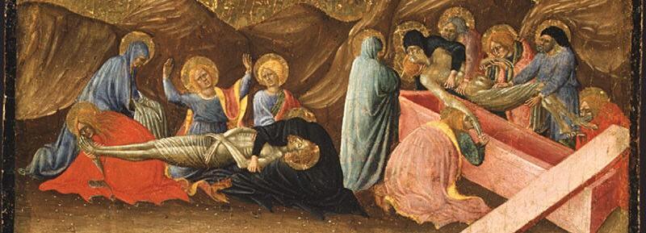

Pestilence Claimeth Many
'Tis said by some that this ist the Almighty's punishment on Wescoln for the Great War. Others do hold 'tis due to corrupt air in the cities. The pestilence still doth claim poor souls.

The poor ones arst taken to be buriede outside Aerdis Monasterie.
by Matias Kopecky
Updated 8 minutes ago
Several scores have been claimeth by the pestilence this fortnight in Dotheim. Gravediggers arst working double shiftses, and the Aerdis Monastery hath begun to bury the bodies in pits beyond the Monastery's lande. Brother Adym of Aerdis hath sworn that this doth not hinder the souls of the deceased from attaining to the heavenly realm, nor yet to the fiery pit below. The brotherhood, faithful in devotion, hath been diligent in their nocturnal vigil, which they call "thoughts and prayers."
The gravediggers, however, are not tickled with glee.
– God shall deliver us, and I prayest He delivers me first, for I am sick of this, says Dana the gravedigger.
What to do if thou falleth into sickness
One in five who fall ill willt perish, especially the younge. It ist of great importaunce that thou and the people around thou pray and keep thy feet away from onions, ast onions further corrupt the air with pestilence if thou either touche or eat them.
Physician Milena in Dotheim administers bloodletting case the sickness doth progress unto a perilous state. However, she shall be attendyng the jousting tournament and will not be conducting the arte of bloodletting therin. If thou arst in dire need of bloodletting at this tyme, she doth recommend stabbing thyself with a rod for guaranteed bleeding.
The town council has decided that notwithstanding the physicians' recommendations about avoiding large gatherings, the forthcoming jousting tournament amongst other festivities willst still come. Lest, sick peoples should stay home in their beds.
– The jousting tournament doth lie in an open field and therefore well aerated and safe. Corrupted air thrives in indoor halls, says the town crier.
Published: 05.05.1424 at 18:02
Updated: 06.05.1424 at 12:59
Anya Machova
20:31
Rufus Grundar
20:22
Jan Hladik
18:34